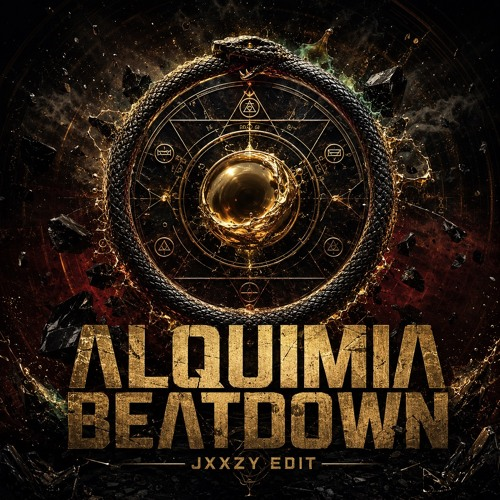
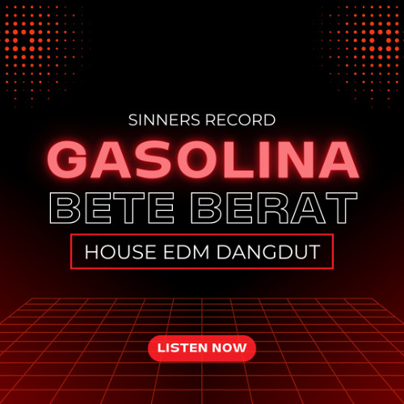

JXXZY / 02
MUSIC.
Official tracks, edits & DJ sets
OFFICIAL MUSIC LIBRARY
FEEL THE SOUND.
22 tracks and sets
No matching tracks. Try a different title or platform.






Official tracks, edits & DJ sets
22 tracks and sets
No matching tracks. Try a different title or platform.

